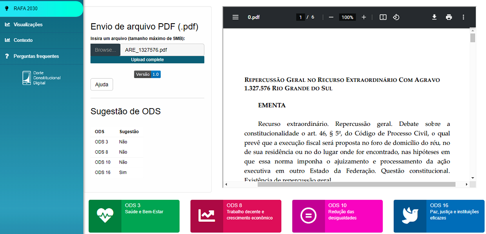
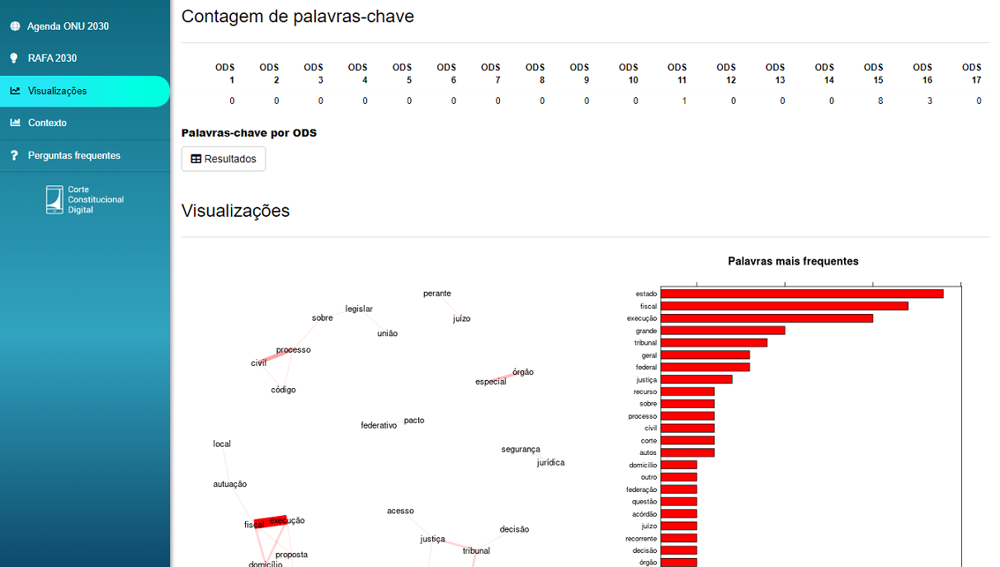
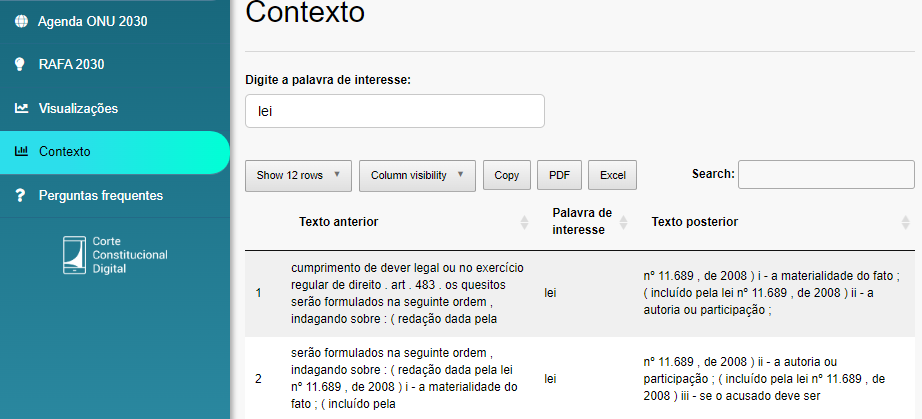

6 Aplicativo
A segunda frente da iniciativa RAFA envolve o desenvolvimento de um aplicativo em Shiny para apoio visual e de leitura à atividade de classificação. Com a ferramenta, que lê muito rapidamente processos em PDF e os resume através de palavras-chave e gráficos, os servidores dedicados à classificação podem performar melhor e mais rápido. São disponibilizadas ferramentas gráficas para NLP, tais como gráficos de coocorrência e de palavras mais frequentes, bem como nuvens de palavras e busca por contexto de leis e palavras específicas.
O aplicativo fica disponível em um link similar a um endereço web e pode ser utilizado em qualquer navegador (Google Chrome, Mozilla, etc), até mesmo em celulares. Nenhum pré-requisito técnico ou de hardware é necessário, pois o aplicativo foi criado para ser útil, funcional e intuitivo aos servidores da área jurídica. A primeira aba do aplicativo tem informações sobre o seu uso e a segunda contém informações sobre a Agenda 2030, com links oficiais para a ONU e para o hotsite do STF. O usuário encontra um campo para upload do processo na terceira aba (chamada RAFA 2030). Depois que o aplicativo lê a peça em PDF, aparecem sugestões de classificações obtidas via aprendizagem de máquina (ODS 16, 10, 8 e 3) e gráficos como a nuvem de palavras. Ainda nesta aba, o usuário pode baixar o texto limpo para utilização em algoritmos próprios. A figura a seguir mostra a aba RAFA 2030 do aplicativo:

As demais abas mostram gráficos mais avançados, contagem e exibição das palavras-chave localizadas e um buscador de contexto, como mostram as figuras Figura 6.2 e Figura 6.3.


Com esses recursos é possível mapear palavras importantes do documento e analisar o contexto de cada uma delas. Um exemplo clássico é dado pela palavra “Salina”, que pode ser uma área para produção de sal marinho ou um sobrenome. Uma simples busca de contexto pode ajudar a não classificar um dado processo que contenha esta palavra em ODS relacionados à meio ambiente e economia sustentável, por exemplo. Vale o mesmo para a palavra “Rio”, que pode ser curso de água ou inicial de nomes de estados. Com o uso do aplicativo, analistas podem fazer um mapa geral do documento, de forma automatizada e em poucos segundos após o upload de uma peça jurídica. Espera-se que a ferramenta possa ajudar a diminuir o tempo para análise e classificação dos documentos, de forma a permitir que servidores sejam alocados em atividades menos manuais e repetitivas.
Alguns módulos ainda podem ser incluídos e o aplicativo encontra-se em fase de testes por usuários do próprio tribunal. O aumento de processos para treinamento tende a trazer mudanças nas redes neurais, contudo não deve impactar no processo de classificação, já que em última análise, esta avaliação será feita por um servidor. Até a estabilização do algoritmo espera-se que o aplicativo seja de grande utilidade na padronização das classificações, o que gera um efeito cíclico de melhoria na performance dos algoritmos. Maiores informações sobre aplicativos em Shiny podem ser encontradas neste link.